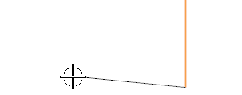
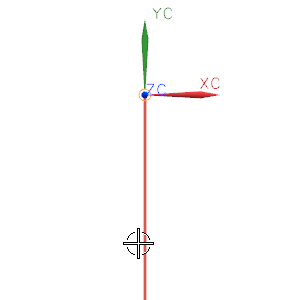
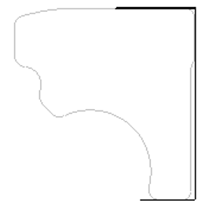

创建水平直线
对于这个轮廓的下一条曲线，您将从竖直直线的下端点处沿-XC 方向创建一条水平直线。

-
放置光标以让新直线在水平7度范围以内，如图所示。

-
在图形窗口中单击。
因为您点击的是落在捕捉角内的直线，所以直线捕捉到精确的水平位置。

您稍后将编辑这条直线，这条线的长度并不严格要求。
现在您将要创建一条单独的水平线，始于竖直线上端点，并且不与您刚才创建的直线相连。
-
在对话框中，点击打断线串。
-
清除线串模式复选框。

线串模式
注意到无界复选框现在可用，如果您选中这个复选框，您创建的任何直线都将一直延伸到视图边界。
-
移动光标选择球到竖直线上。

状态行会显示当前预选的对象类型。
-
移动光标到竖直线的上端点。

现在状态行显示预选的是直线端点。
您要创建的下一条轮廓曲线是一条水平线。
和下方的水平线类似，它的长度也不严格要求。(您打算等之后添加左侧的圆弧后再进行编辑。)
 -
移动光标到竖直线的上端点，确保状态行显示的是"直线端点"，然后选择这个点。
-
移动光标到左侧，以让直线捕捉到水平。
创建了另一条水平直线，您的图形窗口看起来应该类似于下图。